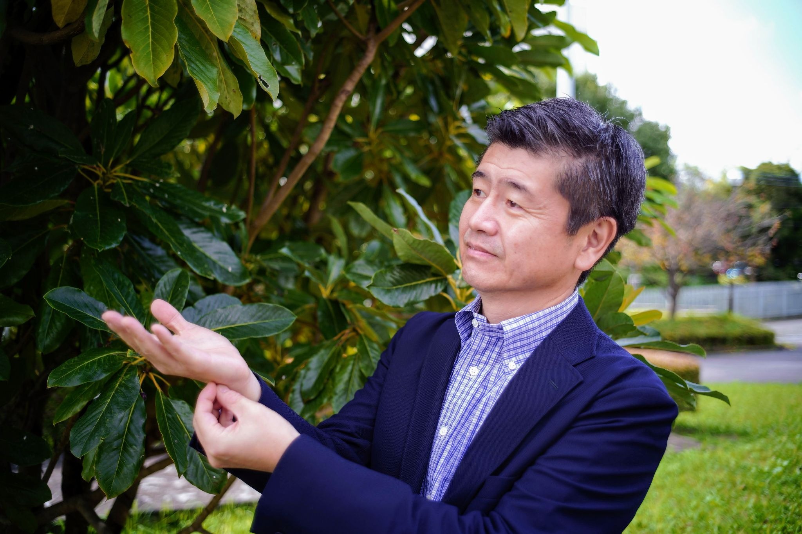
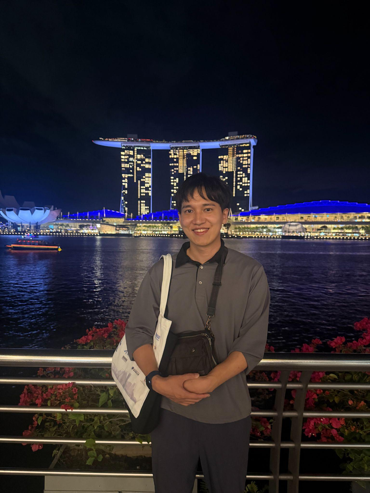

Our Members
A multidisciplinary team spanning linguistics, computer vision, AI, and Deaf studies across the UK and Japan.
Principal Investigators
Richard Bowden
Professor of Computer Vision and Machine Learning
CVSSP, University of Surrey
Computer vision and ML for sign language recognition, translation and production. 30 years experience. BSL level 3. Co-founder of Signapse.
Mayumi Bono
Associate Professor of Interaction Studies
National Institute of Informatics (NII) / SOKENDAI
Sign language linguistics, multimodal interaction analysis, AI-linguistics integration for JSL corpora. JSL interpreter level, BSL level 2, IS beginner.
Co-Principal Investigators
Annelies Kusters
Professor of Sociolinguistics
Dept of Languages and Intercultural Studies, Heriot-Watt University
Multimodal/multilingual languaging, language ideologies, family language policy, deaf-hearing interactions, international deaf communication.
Kearsy Cormier
Professor of Sign Linguistics
DCAL Research Centre, University College London
Linguistics of sign languages. Director of DCAL. BSL Corpus and BSL Signbank creator. Fluent BSL, some ASL and IS.
Robert Adam
Programme Director, British Sign Language
Dept of Languages and Intercultural Studies, Heriot-Watt University
Minority sign language contact, code switching, language attrition, sociolinguistics. Qualified deaf interpreter/translator. Registered IS interpreter.

Yutaka Osugi
Professor
Research and Support Center on Higher Education for People with Disabilities, Tsukuba University of Technology
Diachronic/synchronic database for JSL. AR systems in educational settings for sign language.
Koji Inoue
Assistant Professor
Graduate School of Informatics, Kyoto University
Spoken dialogue systems and conversational robots, turn-taking models.
Kotaro Funakoshi
Associate Professor
FIRST, Institute of Integrated Research, Institute of Science Tokyo
NLP, Multimodal Dialogue Systems, Human-Machine Interaction.
Collaborators
Kazuhiro Nakadai
Professor
Dept of Systems and Control Engineering, Institute of Science Tokyo
Robot Audition, Computational Auditory Scene Analysis, Drone Audition, Sign Language Processing, Robotics, AI.
Nobuko Kato
Professor
Faculty of Industrial Technology, Tsukuba University of Technology
Communication support system for deaf/hard-of-hearing, Human-Computer Interaction.
Yuhki Shiraishi
Professor
Faculty of Industrial Technology, Tsukuba University of Technology
User-led Accessible Technology Research using AI (ML/LLM) for Deaf/Hard of Hearing in HCI. Conducts classes using JSL.
Anis Hamadouche
Research Associate
School of Engineering and Physical Sciences, Heriot-Watt University
AI-based Multi-Modal Audio-Visual Speech Codecs, Algorithm design and hardware/software optimization.
Early Career Researchers
Junwen Mo
PhD Candidate
Nakayama Lab, Dept of Creative Informatics, The University of Tokyo
AI in Machine Translation and Sign Language Translation. Large Vision-Language Models for Sign Language Understanding. Brain-inspired AI.
Santiago Poveda Gutierrez
Prospective PhD Candidate
Nakayama Lab, Dept of Creative Informatics, The University of Tokyo
Sign Language Processing for low-resource signed languages, Large Vision-Language Models. Interpretability, ethical AI, AI safety.
Wang Zirui
Master Student (Informatics)
Bono Lab, NII / SOKENDAI
Sign Language Translation, multi-channel linguistic modeling (manual & non-manual signals), Large Vision-Language Models.
Heidi Proctor
Research Fellow
DCAL Research Centre, University College London
Sign language linguistics (syntax, morphology, mouthing, corpus linguistics, sociolinguistics). BSL level 3.
Nabeela Khan
PhD Candidate
Nakadai Lab, School of Engineering, Institute of Science Tokyo
Multimodal Generative AI, Sign Language Generation, Human Robot Interaction.
Sihan Tan
PhD Candidate
Nakadai Lab, Institute of Science Tokyo
Multimodal Modelling for Sign Language Processing, Sign Language Translation, NLP.
Yusong Wang
PhD Candidate
Funakoshi Lab, School of Engineering, Institute of Science Tokyo
Multimodal emotion/personality recognition, multimodal machine translation.
Takao Obi
PhD Candidate
Funakoshi Lab, School of Engineering, Institute of Science Tokyo
Multimodal spoken dialogue system, Human-robot interaction, User interface.
Kosuke Funayama
Master's Student
Shiraishi Lab, Dept of Industrial Technology, Tsukuba University of Technology
AR Accessibility for Deaf and Hard-of-Hearing Users, AI modeling with Data-centric perspective.

Ryuichi Sumida
Doctoral Student
Graduate School of Informatics, Kyoto University
Multimodal spoken dialogue system, Long-Term Conversations in Chatbots, Gamification.
Coordinators & Staff
Tomohiro Okada
Technical Staff / Coordinator
Bono Lab, National Institute of Informatics
Mouthing of JSL, JSL Dataset/Corpus Annotator.
Kimiko Inoue
Administrative Staff / Coordinator
Bono Lab, National Institute of Informatics
Secretariat